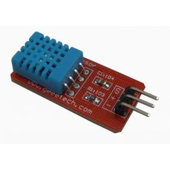
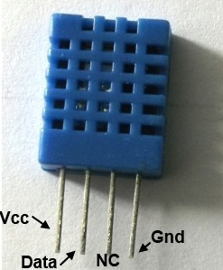
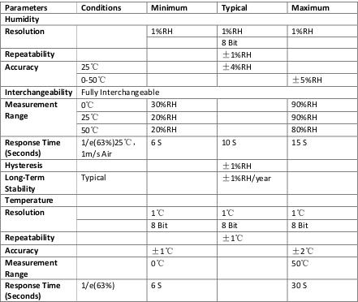
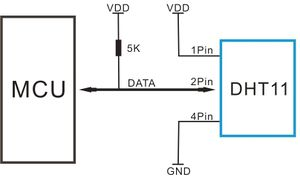

DHT11
 
It is one of the most cheapest and most easily accquired sensor in the market with a good range for practical conditions.And has a wide support as well as easy calculation of sensor data.
This DFRobot DHT11 Temperature & Humidity Sensor features a temperature & humidity sensor complex with a calibrated digital signal output. By using the exclusive digital-signal-acquisition technique and temperature & humidity sensing technology, it ensures high reliability and excellent long-term stability. This sensor includes a resistive-type humidity measurement component and an NTC temperature measurement component, and connects to a high- performance 8-bit microcontroller, offering excellent quality, fast response, anti-interference ability and cost-effectiveness.
Specifications

typical application

Note: 3Pin – Null; MCU = Micro-computer Unite or single chip Computer When the connecting cable is shorter than 20 metres, a 5K pull-up resistor is recommended; when the connecting cable is longer than 20 metres, choose a appropriate pull-up resistor as needed.
reference from wikipedia